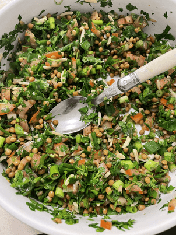

Lentil Tabuli

I was lucky enough to grow up eating tabuli on average once per week
Something my mother picked up living in a multicultural part of Sydney where people would share the food they loved
This is a little different to a classic tabuli that uses cracked wheat but I find lentils make it more substantial
Ingredients
- Green Onions
- Mint
- 1 tomato
- Parsley
- Tin of cooked brown lentils
- 2 limes
- Olive oil + salt
Instructions
- Finely dice green onions, mint and parsley
- Cube the tomato into small pieces
- Mix lentils chopped herbs + tomatos
- Add the juice of 1-2 limes + olive oil and salt to taste